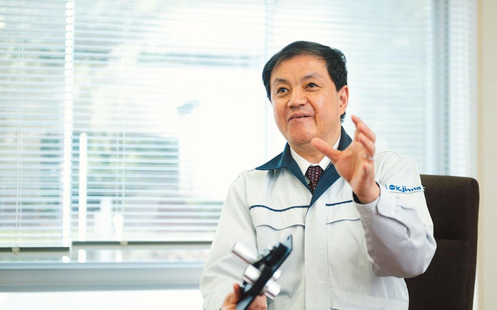
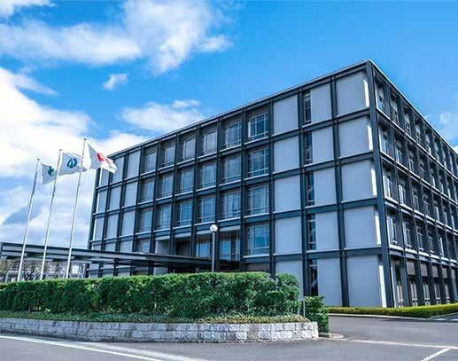
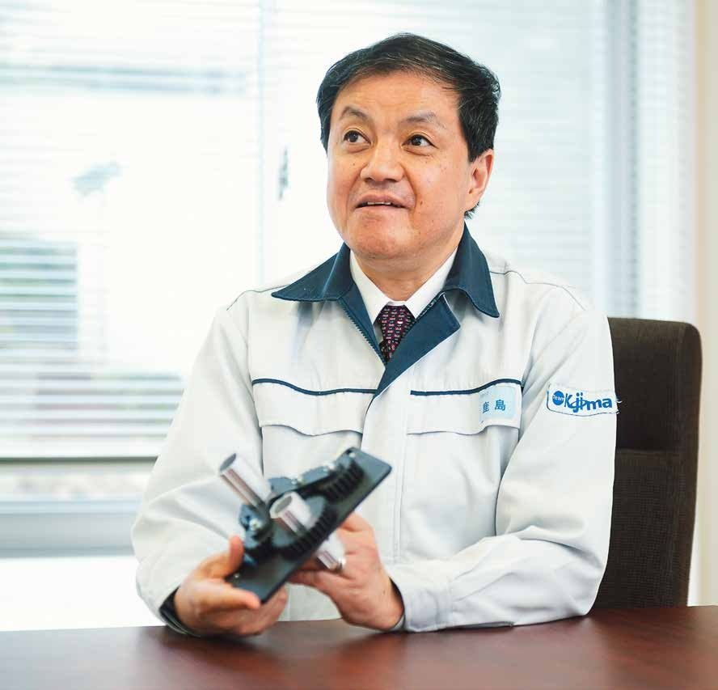
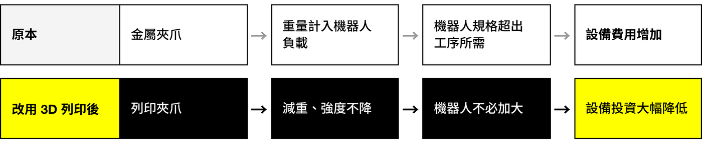
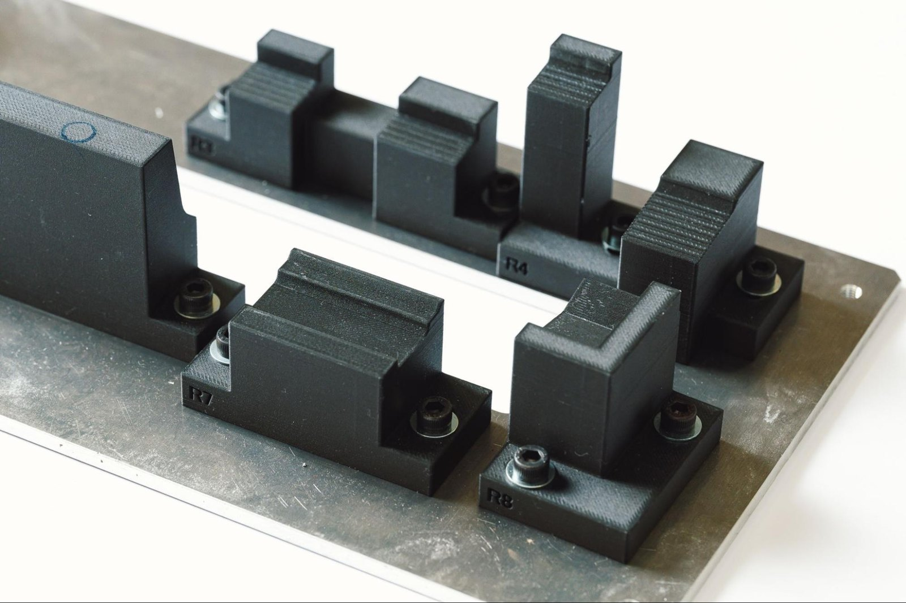
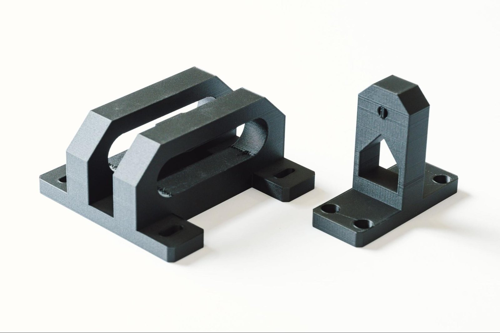
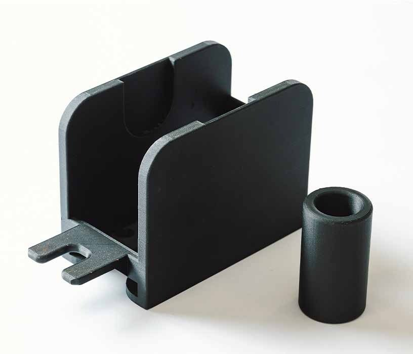

News & Insights

零件成本降 67%，交期從 14 天縮短為 1 天
案例同時指出，原本的金屬夾爪重量偏高，機器人必須選用超出工序所需的規格；改用列印件減重後，機器人不必選用過大規格，自動化設備的整體投資大幅降低。
起點
創業 88 年的汽車零件廠，以機器人取代人工貼片
小島創業 88 年，連同集團公司員工超過 8,000 人，在日本、美國、泰國、中國與歐洲設有據點；主要設計、生產汽車內裝件、外裝件與單元零件，以集團供應鏈提供從開發到量產的一條龍服務。
電動化與系統整合正在改寫汽車產業，全球化也讓零件廠之間的競爭更激烈。小島以 QCD——品質（Quality）、成本（Cost）、交期（Delivery）——為準則，持續追求成本更低、精度更高、速度更快的製造。
產線上有一道工序，需由作業員以人工黏貼不織布貼片。隨著貼片數量增加，這道工序耗用的工時持續上升。為提升效率並減少人力，小島決定導入機器人自動化。


課題
金屬夾爪過重，機器人規格超出工序所需
自動化設備上的機器人夾爪，原本以金屬材料製作。夾爪安裝在機器人手臂末端，其重量直接計入機器人須承擔的負載。
金屬夾爪的重量使機器人規格必須高於工序實際所需，整體設備費用因此大幅增加。機器人的可搬重量須同時涵蓋夾爪與工件；夾爪越重，所需的機器人負載等級就越高。

做法
以 Markforged 3D 列印在廠內製作夾爪
小島導入 Markforged 3D 列印機（案例中列出的機型為 Mark Two 與 X7），改以列印方式製作機器人夾爪。
案例原文指出，改用 3D 列印件之後，夾爪在維持生產使用所需強度的前提下明顯減重；機器人因此不必選用過大的規格，設備投資大幅降低。
案例同時公開了幾件用在產線上的列印件：以氣缸調整治具底座角度用的氣缸接頭（Cylinder Joint）、在生產過程中定位並承接產品的受台治具，以及存放成捲貼片的料架。



成果
成本降低 67%，交期由 14 天縮短為 1 天
費用。以 3D 列印製作的夾爪零件，費用比傳統機械加工件低 67%。
交期。這類零件過去委外加工，案例列出的交期為 14 天；改以 Markforged 3D 列印機在廠內製作後，1 天即可完成。與委外加工件相比，成本與交期都大幅縮減。
設計工時。委外加工必須先繪製 2D 加工圖才能發包；3D 列印可直接使用 3D CAD 資料製作。依零件不同，設計工時可減少約 30%。
品質。依案例原文，列印夾爪在減重後仍維持生產使用所需的強度。
評估
導入機器人自動化前，先確認夾爪重量
本案公開的列印件都是產線上使用的工具，包括夾爪、治具與料架。這類零件多依工序個別設計、需求數量少，委外加工時費用與等待時間的占比特別高；本案的費用、交期與設計工時三項數據，都來自這類零件。
規劃機器人工作站時，夾爪重量會直接影響機器人的選型與設備預算。建議先完成夾爪設計並確認重量，再據此選定機器人規格。若夾爪重量已接近機器人的額定負載，或夾爪零件委外加工的交期以週計算，就值得把 3D 列印方案與機械加工並列比較成本與交期。
完整案例整理（A4 · 6 頁）
本案的完整整理，含公司背景、工序課題、列印件逐件說明與 QCD 成果數據。三語版本，可直接下載引用。
資料來源
- Markforged 官方客戶案例〈Kojima Industries Corporation〉英文版，2026 年 10 月 22 日發布；本文事實、數據、人物職稱與零件說明均引自該案例及其下載版 PDF
https://markforged.com/resources/case-studies/robotic-tooling-with-kojima-industries-corporation - 同一案例日文版〈小島プレス工業株式会社〉，為客戶母語原文，含受訪者完整職稱
https://markforged.com/jp/resources/case-studies/robotic-tooling-with-kojima-industries-corporation - 小島沖壓工業（小島プレス工業株式会社）官方網站
https://www.kojima-tns.co.jp/ - 照片與 logo 取自 Markforged 官方客戶案例配圖，版權屬 Markforged 或小島沖壓工業
本文由 Markforged 大中華區暨越南團隊整理。
回到媒體中心 · markforged.tw